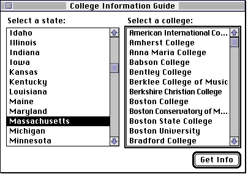

Multiple Lists in a Window
In a window with multiple lists that support keyboard navigation, you need to show which list is the target of keyboard input. To help the user in such a window, your application should draw a 2-pixel-wide outline around the current list, that is, the list that would be affected by typing. The box should surround the entire list, including any scroll bars, and there should be 1 pixel of white space between the outline and the list's border. Figure 4-16 illustrates a window containing more than one list.Figure 4-16 An outlined list in a window with more than one list

In Figure 4-16, the second list is outlined. Thus, the user knows that using the keyboard affects this list only. Your application should allow the user to press the Tab key to move the outline to the next list in a window. In a window with more than two lists, your application should allow the user to press Shift-Tab to move the outline to the previous list in a window.Ordinarily, your application should not outline a list that is the only list in its window. However, if there is an editable text item in a dialog box containing a list, or if keyboard input could have some other effect, then your application should outline a list when the user can navigate it with the keyboard. The user should be able to use the Tab key to switch between a list and an editable text item; however, there is no need to outline the editable text item, since the insertion point indicates to the user that using the keyboard results in any text being inserted there.
When a window containing multiple lists is deactivated, your application should remove the outline from the current list and not replace it until the window is activated.